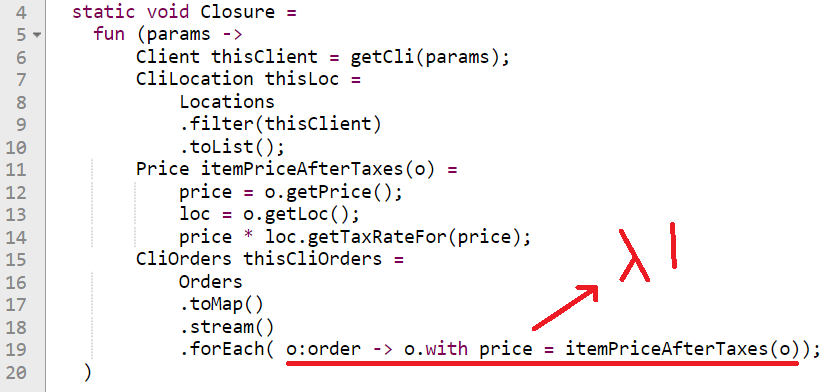

<!DOCTYPE html> 
<html>
<head>
	<title>Mike's Blog</title>
	<meta http-equiv="Content-Type" content="text/html; charset=utf-8">

	<!--The file below imports claro/document/gridx/rtl/dojo css files-->
	<link rel='stylesheet' href="https://oria.github.io/gridx/build/gridx/tests/support/common.css" />
	<script type="text/javascript" src="https://oria.github.io/gridx/build/dojo/dojo.js" data-dojo-config="async: true"></script>

	<!--link rel="stylesheet" href="gfxClaro.css"-->	<!--(for overrides)-->
	<link rel="stylesheet" href="https://trivedienterprisesinc.github.io/ui/2024/form/gridx_Styling/common.css">
	<link rel="stylesheet" href="https://trivedienterprisesinc.github.io/ui/2024/form/gridx_Styling/gfxGridx.css">	<!--(for customizations)-->

<!--BEGIN Frm related + local assets-->
	<style>
		fieldset		{ border: 1px solid; margin: 1em; padding: 1em; }
		legend 			{ font-weight: bolder; font-size: larger; }

		#result			{ background-color: white; }
		#result th		{ font-weight: bolder; }
		#result .hilite	{ background-color: #fd8; }

	.dijitDialogPaneContent {
	    width: 800px !important;
	    height: 600px !important;
	}

	.makeYellow		{ background-color: #ffa; }

	.claro html, body{
	    background-color: rgb(253, 245, 230);
	    background-image: url("./assets/fake-luxury.png");
	    background-repeat: repeat;
	}
  .quote {
    margin: 0;
    background: #eee;
    padding: 1em;
    border-radius: 1em;
  }
  .quote figcaption,
  .quote blockquote {
    margin: 1em;
  }

	</style>

<script type="text/javascript" src="https://trivedienterprisesinc.github.io/ui/2024/form/gridx_Styling/commonAux.js"></script>
<script type="text/javascript" src="https://trivedienterprisesinc.github.io/ui/2024/form/gridx_Styling/FrmMngrExt.js"></script>
<script type="text/javascript" src="https://trivedienterprisesinc.github.io/ui/2024/form/gridx_Styling/pvDlg.js"></script>
<!--END Frm related assets-->

<script>
require([
	'dojo/parser',
	'dojo/on', 'dojo/dom', 'dojo/mouse', /*@mbi'dojo/dom-Class',*/
	'dojo/_base/Deferred', 'dijit/Tooltip', 'dijit/Toolbar', "dijit/Menu", "dijit/MenuItem",
	'dijit/form/Button', "dijit/form/ComboButton", 'dijit/form/Select', 
	/* frm related */
    "dojo/_base/lang", "dijit/registry", "dojox/form/Manager",
	'dijit/Dialog',
	'dojo/domReady!'
], function(parser, on, dom, mouse, /*@mbidomClass,*/ Deferred, Tooltip, Toolbar, Menu, MenuItem, Button, 
	    ComboButton, Select, lang, registry, Mngr, Dialog){

	window.showFrm = function(){
	    myFrmDialog.show();
	    var frm = registry.byId("form");
	    frm["disable"]();
	}
	window.editFrm = function(){
	    var frm = registry.byId("form");
	    frm["enable"]();
	}

	const gfxCreateBtnHandler = (e) => {
	    myFrmDialog.show();
			(registry.byId('frmTBpv')).set('disabled', true);
	    frm["enable"]();
			alert('createBtnTibbie');
	}

	var gfxCreateBtn = new Button({
		label: 'Create',
		iconClass:'gridxCreateIcon',
		onClick:gfxCreateBtnHandler
	});


	testFetch = function(){
						window.runFetch('fetchPVs');
	};

	parser.parse();
});
</script>

</head>

<body class='claro'>
	<h1 class='title' tabindex='0' onfocus='this.style.color="blue"' onblur='this.style.color=""'>
Mike's Blog
	</h1>

<div data-dojo-type="dijit.form.Button>Articles</div>
<div data-dojo-type="dijit.form.Button" >About</div>
	
  Assets:<br>
  <ul>
    <li>Curr ver (Feb 11) uncommented w/core fns embedded 2 gist</li>
    <li>Curr ver (Feb 11) reduced (no console debgs) for inclusion</li>
    <li>Gif of debug stmts, freeze 4 details or go 2 end & scroll up 2 see outpt</li>
  </ul>
<hr>
  <br>
	
	<center>
	<h1>PBT: Developers must NOT write tests</h1>
	<i>or,</i><br>
	<h2>Hands On: Using FsCheck to test a Windows App's UI</h2>
	</center>
<p>
Every once in a while, something new comes out of the world of Functional Programming (FP) which 
	takes even seasoned developers absolutely by surprise.
<p>
Here's the typical reaction from (even a Senior) developer, one with some FP exposure:<br>
1) The developer will read something and say <i>"What?"</i>  Then he'll go silent and glassy-eyed.<br>
2) After a few more minutes of reading, the developer will emit a low whistle.<br>
3) Finally he'll say: "How is that even <i>possible</i>?
<p>
I felt that way when I first read about FSharp Type Providers (see this, this and this).  
	More recently I felt the same emotions when I encountered Haskell QuickCheck.

	<p>
<h3>Behind the Matrix: The world of FP</h3>

The typical OO developer's initial foray into the FP world will usually find him trying to grok <s>Monads</s> Burritos in three hours.  Or all of Category Theory in one day.
<p>
  When that does not work, the developer will get dejected.  And spend the rest of their life downvoting FP posts.
  <p>
    I feel that there is another approach: just wade into it - start coding - and you shall slowly acquire the <a href='tacit'>Tacit Knowledge</a> behind FP in a few months.
    <p>
      I am a self-taught programmer (no CS degree).  About five years ago I began coding in FSharp.  If I can do it, so can you.
      <p>

Begin with easy definitions and take it from there: <br>
"A Functor is something you can map over"
<br>
The OO dev will be tempted to ask:<br>
"Why so many different definitions of Functors?"<br>
"And why do I need Functors at all?"  
<p>
  The correct answer is:<br>
  "They are already there.  You are already using them.  You just don't know that they <i>are</i> Functors."
<p>
The problem is that FP is almost strictly in the Academic world today (and also in use 
by companies like Micorosoft/AWS but again in their Research departments).<br>
Academics will give you thorough definitions and try to include all rules and properties.<br>
Academics also have exposure to all facets of a concept, so they will tend to describe it from 
their own subspeciality and perspective.  Which is why there are so many different definitions 
for FP concepts, most of them accurate.
<p>
To make the difference between FP devs and non-FP clear, please allow me to offer this illustration:<p>
Say you are doing pair programming with someone named <a href=''>Bartosz</a>, 
<a href=''>Tom Petricek</a> or <a href=''>Rich Hickey</a>.<br>
The two of you are working on a simple CRUD app in a large closure which looks like this pseudoCode:
<p>
  <center></center>
  <p>
Quite straight-forward, correct?  You are just adding some business logic updates.<br>
Suddenly the FP guy next to you goes "Heh heh."<br>
	You look at him inquiringly.  <br>
	He says: "You know what?  The list lengths of ClientOrders will be the same as that of the ClientLocations."<br>
	"What?" you ask.  "What do those two things have to do with each other?"<br>
	He'll ask you to check it with a debug statement.  You are intrigued.  You add the debug statement 
	and it's true: both lists have 531 elements.<br>
'<i>This is insane</i>,' you think.<br>
	"But the orders have nothing to do with the locations," you protest. <br>
	"Please explain," you plead, "first <b>why</b> they're the same; and secondly 
	how did you <b>know</b> that they were going to be the same?"<br>
And he'll tell you something like "They are both Functors in the same closure, so the 	XX Law (or the YY property) applies."  <br>
	And you go, "Whaaaaaat?"
	<p>
  <center></center>
<p>
You see, when you or I see the Lamda, we see a Function, a Method, a Piece Of Code.  
<p>
  The 
FP guy sees all that we see, and then the glyphs on the screen drop (like in The Matrix) 
and then he sees what's <b>behind the code</b>.<br>
To him, the Lambda is the Lambda of Lambda Calculus.  Mathematical rules and properties apply.
	<p>
<h3>No Category Theory needed</h3>
Here is the crucial point: you DO NOT need to see what the FP guy sees behind the Matrix.
You can use the FsCheck library <b>without</b> a thorough grounding of Category Theory or 
	FP concepts like <s>Monads</s> Burritos.  This guide will show you how.
<p>

<h3>Avoid the heavy Lifting</h3>
In this article I am assuming zero FP knowledge.  You might be working in 
C# and using the FsCheck dotnet library, or any other flavor.  <br>
I will show 
you how to create a Model of your DSL and use FsCheck to autoGenerate tests.
<p>

<h3>What it is</h3>
	QuickCheck is a Haskell library which allows you to generate hundreds, even thousands of random 
tests.  You just set it up, give it a property to test and it's almost as if  ten mini developers in the compiler begin to write and execute tests immediately.<p>

Here is how <a href='https://www.cs.tufts.edu/~nr/cs257/archive/john-hughes/quviq-testing.pdf'>John Hughes</a>, one of QuickCheck's original developers, describes the library:<p>

<figure class="quote">
  <blockquote>
Here’s an interesting little experiment. Try asking a room full of software developers, "who really, really loves testing?" Very, very few will raise their hands. For
whatever reason, most developers see testing as more of a chore than a pleasure;
few go to work in the morning raring to write some test cases. And yet, testing
is a vital part of software development! Why should it be so unpopular?<p>
To understand why, imagine writing a suite of unit tests for software with,
say, n different features. Probably you will write 3–4 test cases per feature. This
is perfectly manageable—it’s a linear amount of work. But, we all know you will
not find all of your bugs that way, because some bugs can only be triggered by a
pair of features interacting. <p>Now, you could go on to write test cases for every pair
of features—but this is a quadratic amount of work, which is much less appealing.<p>
And even if you do so, you will still not find all of your bugs—some bugs only
appear when three features interact! Testing for all of these would involve O(n<sup>3</sup>)
work, which is starting to sound very unappealing indeed—and this is before we
even start to consider race conditions, which by definition involve at least two
features interacting, and even worse, only manifest themselves occasionally even
in test cases that can provoke them in principle!
<p>
This is the fundamental problem with testing—you can never be “done”. No
wonder it’s not so popular. What is the answer to this conundrum? Simply this:<br>
<center><b>DON’T WRITE TESTS!</b></center><br>
But of course, we can’t just deliver untested code to users. So the message is
actually more nuanced: don’t write tests—generate them!
<p>
This is how I have spent much of my time in recent years, working with a test
case generator called QuickCheck. QuickCheck was first developed in Haskell
by Koen Claessen and myself (Claessen and Hughes, 2000), and has become
the testing tool of choice among Haskell developers. The idea has been widely
emulated—Wikipedia now lists no fewer than 35 reimplementations of the basic
idea, for languages ranging from C to Swift. 
  </blockquote>
  <figcaption>
    &mdash; John Hughes, <cite>Experiences with QuickCheck:
Testing the Hard Stuff and Staying Sane</cite>  </figcaption>
</figure>
<p>
QuickCheck and its ports have been used in Real-World situations at many companies including Volvo and AWS.  Even though this library has been around for a few years, like most cutting-edge research, 'Main Street' is slow in adopting PBT.  This is good news: you can be one of the devs on the <i>avant garde</i>!

<p>  If you're like me you'll be quite happy to front-load the effort of learning a new testing framework if the long
	term benefits include not writing tests at all!
	<center></center>
<p>

<h3>Required Reading</h3>
Reading these two short articles will help you in your first attempt at PBT:
<ol>
  <li></li>
  <li>FsCheck Docs: <a href='https://fscheck.github.io/FsCheck//StatefulTestingNew.html'>Model</a>-based Testing</li>
</ol>
I found both of these two be an easy read.
<p>
  If you wish to go dive deeper there are additional links at the bottom of this article.
<p>
<h3>Model Based</h3>

After reading all the docs thoroughly I came to the conclusion that the Model-Based approach was the easiest to implement as a newbie.

<p>
  <center></center>
<p>
<figure class="quote">
  <blockquote>
We test stateful systems by generating sequences of calls to the API under test, just like the test cases that developers write by hand. But we also model the state of the system abstractly, and define model state transitions for each operation in the API. Using these state transition functions, we compute the model state at every point in a test. We define postconditions for each API call, relating the actual result of the call to the model state (see the Figure above). A test passes if all postconditions hold.
  </blockquote>
  <figcaption>
    &mdash; John Hughes, <cite>Experiences with QuickCheck:
Testing the Hard Stuff and Staying Sane</cite>  </figcaption>
</figure>
<p>
  <center></center>
<p>
<h3>[[This fig nds 2 be customized to show: ]]</h3>
<ul>
  <li>Actual API Call</li>
  <li>Model API Call</li>
  <li>State</li>
</ul>
To the right, Setup (arrow) & state gets 0;<br>
Then subseq calls under Actual get Inc Inc Dec<br>
and under Model get inc inc dec...
<p>
Easy to reason about, use Spreadsheet txt + link; use Hughes' img + link, Easy to connect to app's functionality.

<br>
	The developers at Row Zero formerly worked at AWS and used tools like QuickCheck to formally verify the S3 filesystem.<br>
	Here is how they define Model-Based Testing in their excellent PBT <a href='https://grantslatton.com/rowzero-property-testing'>article</a>:<br>
<figure class="quote">
  <blockquote>
Blackbox reference-model testing is the best and most powerful method. This involves testing the real implementation of something against a reference model. Typically, the reference model will be much less efficient than the real one, or lacking some functionality.
	<br>
An example of this is how we store the values of the cells in the spreadsheet. You could imagine a solution that is just a giant hash table whose key is the cell name, and the value is the contents of that cell. In practice, we do something much more efficient than this, but our optimized implementation should still behave like a simple hash table.
<br>
So we can make a test that does random cell inserts, updates, and deletes to the real data structure, and a simple hash table reference. Then, at the end of the test, we compare them to make sure they have the same values in each cell.

  </blockquote>
  <figcaption>
    &mdash; Grant Slatton, <cite>founder @ Row Zero</cite>  </figcaption>
</figure>

<p>

<h3>The FsC example</h3>
  Like FSharp code, the Model-Based example shown in the <a href='https://fscheck.github.io/FsCheck//StatefulTestingNew.html'>man page</a> is short but complete<p>
    The entire test is just about 25 lines of code, but there is a lot happenning.<br>
    For those new to FSharp syntax, I ask you to read the man page slowly (especially the documentation part)<p>
      There are only three important types used in the example:<br>
      <ul>
        <li>Machine&lt;TypeUnderTest, ModelType&gt;</li>
        <li>Setup&lt;TypeUnderTest, ModelType&gt;</li>
        <li>Operation&lt;TypeUnderTest, ModelType&gt;</li>
      </ul>
  <p>
    The <b>Counter</b> type is just a wrapper around a stored mutable state  <b>int</b>, and has methods <b>Inc</b> and <b>Dec</b> which return the state.
    <br>
    The main action in the example takes place in the Operations <b>inc</b> and <b>dec</b><br>
    Operations have a function <b>Run</b> which runs the Action on the test Model, and a method <b>Check</b> which runs it on the Actual System; and then compares the result with the results of the test model.
  <p>
    <b>Please note:</b><br> If you find Fsharp code syntax hard to decipher with (and are familiar with C), John Hughes has provided a simple example of testing a queue implemented as a circular buffer in C in <a href='https://www.cs.tufts.edu/~nr/cs257/archive/john-hughes/quviq-testing.pdf'>this</a> paper.  Perhaps you can read it before the FsCheck man page.

<p>
<h3>The Production System under test</h3>
<h3>insert scrnshot</h3><br>
The system I am currently testing is the Desktop UI module of a Database System.<br>  The screenshot above shows how the Desktop window looks.  It is a Windows Form with a multiple document interface (MDI) <a href='https://learn.microsoft.com/en-us/dotnet/api/system.windows.forms.mdilayout?view=netframework-4.8.1'>layout</a>.  This allows the devoper to open multiple child windows, just like the Windows desktop opens a new window for each icon clicked.<p>
The internal API for the Desktop UI element is as follows:
<ul>
  <li><b>AddIcon()</b>: Allows the dev to add a new Icon to the Desktop</li>
  <li><b>RemoveIcon()</b>: Allows the dev to remove a specific Icon from the Desktop</li>
  <li><b>ChangeLbl()</b>:  Allows the dev to change a specific Icon's label text</li>
  <li><b>OpenDb()</b>: Opens the Database associated with the icon; triggered on icon.DoubleClick</li>
  <li><b>OpenDevView()</b>: Opens the Database associated with the icon; triggered on icon.RightClick (popupMenu-&gt;Select("Open in DeveloperView")</li>
  <li><b>WindowSwitchTo()</b>: Allows the Developer to switch to a selected Child Window (accessible via the Window subMenu)</li>
  <li><b>...and so on</b> (many Desktop UI API calls excluded)</li>
</ul><p>
  For this article, we shall only be working with and testing the <b>AddIcon</b> and <b>RemoveIcon</b> API calls.<p>

This functionality seems to be an ideal mapping of the model(s) in the FsCheck example to the Database System: instead of incrementing or decrementing a Counter, we will be adding/removing icons to a UI window.
<p>
  The approach being taken here is a baby step because we are still newbies at PBT.  Once we get it working and have "tested the test setup" we can proceed to build more complicated Models and test other API calls, interleave calls, run them in batches, sequentially or async, etc.
  <p>

<h3>A Note about the Production System</h3>
<p>
For the test we are going to pass a 3-parameter tuple to the ctor: <b>(ImageName, TableType, TableName)</b>
<p>
  The real system uses many more parameters: State information like DateTimeTableLastAccessed, DatabaseQueryString, SessionInfo, UserInfo, UserMarkedRecords, etc.<p>
    Most of these extra parameters are irrelevant to our test (which only tests the icons) so instead of calling the production ctor I'll be calling a curried function which will fill in the missing parameters with default values.
    <p>
      Please also note that because the production system is commercial/copyrighted I can't share any proprietory code.  However, the test gist here contains working code; I shall share the <b>results</b> of running the test on production and you shall have enough to customize the models and types to your own application.
      <p>


<h3>Hacking the FsCheck Example</h3>
  We are now ready to hack the example to incorporate our desired changes.
<br>
<h3>Connecting 2 the Production System</h3>
  Dir of snaps, move 2 end
<br>
<h3>Add Cmds 4 openWins</h3>
  Also renaming, poss; then chain em all.
<br>

<hr>
	Links from the PBT mBox<p>

<br>dotNet race condition testing: (recent post ~ 21)
<br>https://stackoverflow.com/questions/68222989/do-race-conditions-exist-when-using-just-async-await
<br>
Wlaschin PBT (fmtd; we have pgs 1-3): PBT_wlaschin.64 (this plnk) (removed)
(condensed w/images here: https://blog.ssanj.net/posts/2016-06-26-property-based-testing-patterns.html)
<br>
Haskell SUT state-machine testing tutorial: https://github.com/stevana/property-based-testing-stateful-systems-tutorial/tree/main
<br>
Property-Based Testing Against a Model of a Web Application
<br>August 11, 2022 (https://concerningquality.com/model-based-testing/)
<br>
See also (ALL seem relevant; chk appendices for more):
<br>
* 2016 Mysteries of Dropbox: Property-Based Testing of a Distributed Synchronization Service (Hughes et al., 11 pp)
<br>
x How to <a hre='https://research.chalmers.se/publication/517894/file/517894_Fulltext.pdf'>Specify</a> it! (John Hughes) : A Guide to Writing Properties of Pure Functions.
<br>
x John Hughes: ~2006 Experiences with QuickCheck: Testing the <a href='https://www.cs.tufts.edu/~nr/cs257/archive/john-hughes/quviq-testing.pdf'>Hard Stuff</a> and Staying Sane
<br>
		[This paper introduces Quviq QuickCheck (Erlang port), and in particular the extensions made for testing stateful code, via a toy example in C. 
It goes on to describe the largest QuickCheck project to date, which developed acceptance tests for AUTOSAR C code on behalf of Volvo Cars.
Finally it explains a race detection method that nailed a notorious bug plaguing Klarna, northern Europe’s market leader in invoicing systems for
e-commerce. <br>
Together, these examples give a reasonable overview of the way QuickCheck has been used in industrial practice.]
<br>
* <a href='https://dl.acm.org/doi/10.1145/3477132.3483540'>Paper</a>: Using Lightweight Formal Methods to Validate a Key-Value Storage Node in Amazon S3 
<br>This paper reports our experience applying lightweight formal methods to validate the correctness of ShardStore, a new key-value storage node implementation for the Amazon S3 cloud object storage service.
<br>

FsChk related (from <a href='https://fscheck.github.io/FsCheck//LearningResources.html'>fsChk Repo</a>)
<br>* <a href='https://www.compositional-it.com/news-blog/proving-function-correctness-with-property-based-tests/'>Blog</a> article (Sept '24): Proving function correctness with property-based tests
<br>In this blog post, Matt shows how property-based tests and carefully chosen properties can be used to "prove" function correctness.
<br>
* FsChk <a href='https://www.nuget.org/packages/FsCheck#versions-body-tab'>3.0</a> (2025) 
<br><a href='https://wqplease.com/p/fscheck-3-property-based-testing-in-c-3ba4a2a50388'>(uses C#)</a>
<br>* <a href='http://opcoast.com/demos/fsharp/part3.html'>Uses</a> of FsCheck to test functions that arise in development of a branch and bound algorithm.
<br>* <a href='https://fsharpforfunandprofit.com/posts/property-based-testing-2/'>Wlaschin</a>: Choosing properties for property-based testing
<br>“what properties should I use? I can’t think of any!”
<br>* <a href='https://fscheck.github.io/FsCheck//TipsAndTricks.html'>Tips and Tricks</a>
<br>Perhaps surprisingly, FsCheck can generate random functions, Func and Actions. As a result, it can check properties of functions...
<br>	
</body>
</html>
